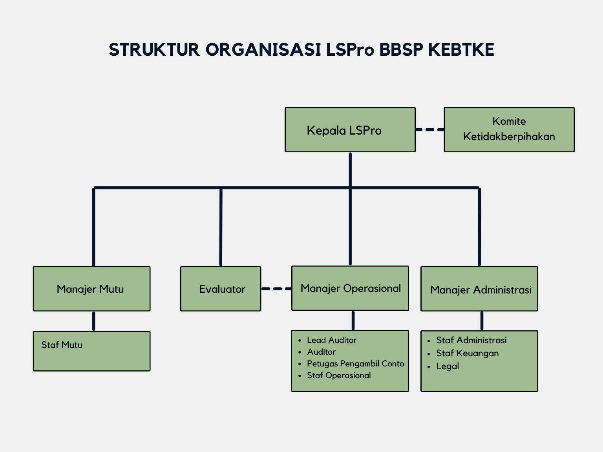
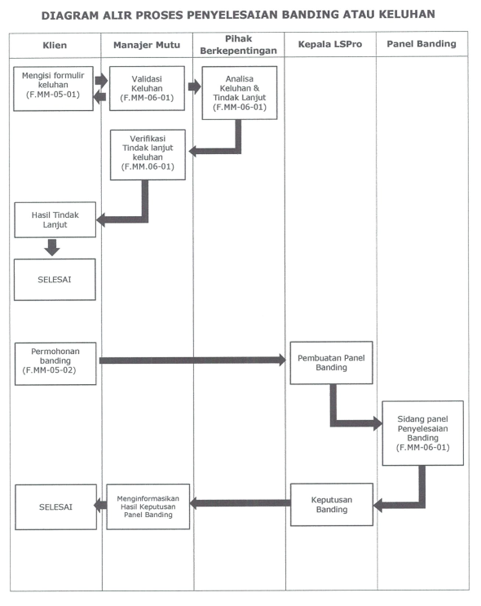

- Struktur Organisasi
- Alur Proses Sertifikasi

- Skema Sertifikasi
No Komoditi Skema Sertifikasi Download Dokumen 1 Lampu Light Emitting Diode (LED) Swa-balast Skema Sertifikasi Lampu Light Emitting Diode (LED) Swa-balast - Spesifikasi Keselamatan
SNI IEC 62560:20152 Lampu Light Emitting Diode (LED) Swa-balast Skema Sertifikasi Standar Kinerja Energi Minimum dan Label Tanda Hemat Energi Lampu Light Emitting Diode (LED) Tabung Swa-balast
Kepmen 135.K/EK.07/DJE/2022: Lampu Light - Emitting Diode (LED)3 Lampu Light Emitting Diode (LED) Tabung Swa-balast Skema Sertifikasi Standar Kinerja Energi Minimum dan Label Tanda Hemat Energi Lampu Light Emitting Diode (LED) Luminer
Kepmen 135.K/EK.07/DJE/2022: Lampu Light - Emitting Diode (LED)4 Lampu Light Emitting Diode (LED) Luminer Skema Sertifikasi Standar Kinerja Energi Minimum dan Label Tanda Hemat Energi Lampu Light Emitting Diode (LED) Luminer
Kepmen 135.K/EK.07/DJE/2022: Lampu Light - Emitting Diode (LED)5 Penanak Nasi Skema Sertifikasi Standar Kinerja Energi Minimum dan Label Tanda Hemat Energi Penanak Nasi
Kepmen 115.K/EK.07/DJE/2021: Penanak Nasi - Biaya Sertifikasi
Adapun rincian biaya akan dikirimkan langsung kepada pemohon yang mengajukan permohonan sertifikasi produk
- Hak Pemohon
- Memperoleh akses atas Skema Sertifikasi milik LSPro BBSP KEBTKE yang relevan sebagai salinan tidak terkendali.
- Memperoleh Sertifikat Kesesuaian SNI dan mengklaim bahwa produknya telah tersertifikasi untuk ruang lingkup produk yang dinyatakan memenuhi persyaratan Sertifikasi oleh LSPro BBSP KEBTKE.
- Mendapatkan informasi nama tim Audit yang akan melakukan audit/surveilan/re-audit dan diberi kesempatan untuk melakukan penilaian/mengevaluasi kinerja tim asesmen dan melaporkannya kepada LSPro BBSP KEBTKE.
- Mengajukan permohonan penambahan, pengurangan, pembekuan dan pencabutan lingkup sertifikasi.
- Mengajukan keluhan/perselisihan dan banding atas keputusan LSPro secara tertulis yang ditujukan ke alamat LSPro BBSP KEBTKE.
- Kewajiban Pemohon
- Menandatangani surat perjanjian kontrak dengan LSPro BBSP KEBTKE.
- Memenuhi persyaratan Sertifikasi termasuk menerapkan perubahan yang sesuai bila perubahan tersebut telah dikomunikasikan oleh LSPro BBSP KEBTKE.
- Jika Sertifikasi berlaku untuk produksi yang sedang berlangsung, produk yang disertifikasi secara terus menerus memenuhi persyaratan Sertifikasi.
- Membuat seluruh pengaturan yang diperlukan untuk pelaksanaan evaluasi dan survailen (jika diperlukan) kepada LSPro BBSP KEBTKE, termasuk ketentuan untuk memeriksa dokumentasi dan rekaman, dan akses terhadap peralatan, lokasi, wilayah, personil, dan subkontraktor Pemohon yang relevan.
- Membuat seluruh pengaturan yang diperlukan dalam rangka penyelidikan pengaduan kepada LSPro BBSP KEBTKE.
- Membuat seluruh pengaturan yang diperlukan untuk partisipasi pengamat (observer) dan atau penyaksian (witness) dari regulator terkait jika diperlukan.
- Pemohon hanya membuat pernyataan terkait Sertifikasi sesuai dengan ruang lingkup dalam Sertifikasi produknya yang diberikan oleh LSPro BBSP KEBTKE.
- Tidak menggunakan Sertifikasi produknya yang diberikan oleh LSPro BBSP KEBTKE sedemikian rupa sehingga mengakibatkan reputasi LSPro BBSP KEBTKE menjadi buruk dan tidak membuat pernyataan terkait Sertifikasi produknya yang dianggap oleh LSPro BBSP KEBTKE sebagai menyesatkan atau tidak sah.
- Menyimpan rekaman seluruh keluhan yang diketahui berkaitan dengan pemenuhan persyaratan Sertifikasi dan membuat rekaman tersedia bagi LSPro BBSP KEBTKE bila diminta.
- Pada saat pembekuan, pencabutan, atau penghentian Sertifikasi, Pemohon menghentikan penggunaan seluruh iklan yang berisi referensi apapun di dalamnya dan mengambil tindakan seperti yang dipersyaratkan oleh Skema Sertifikasi milik LSPro BBSP KEBTKE serta mengambil tindakan lain yang diperlukan.
- Jika Pemohon memberikan salinan Sertifikat Kesesuaian SNI kepada pihak lain, Sertifikat Kesesuaian SNI harus direproduksi secara keseluruhan atau seperti yang ditentukan dalam Skema Sertifikasi milik LSPro BBSP KEBTKE.
- Dalam membuat referensi untuk Sertifikasi produk di media komunikasi seperti dokumen, brosur, atau iklan, Pemohon memenuhi persyaratan LSPro BBSP KEBTKE atau seperti yang ditetapkan dalam Skema Sertifikasi milik LSPro BBSP KEBTKE.
- Memenuhi persyaratan apapun yang ditentukan dalam Skema Sertifikasi milik LSPro BBSP KEBTKE yang berhubungan dengan penggunaan tanda kesesuaian, dan informasi lain yang terkait dengan produk.
- Mengambil tindakan yang tepat terhadap keluhan dan setiap kekurangan yang ditemukan dalam produk yang mempengaruhi kesesuaiannya terhadap persyaratan Sertifikasi dan mendokumentasikannya.
- Menginformasikan kepada LSPro BBSP KEBTKE, tanpa penundaan, untuk setiap perubahan yang dapat mempengaruhi kemampuan Pemohon untuk sesuai dengan persyaratan Sertifikasi. Perubahan yang dimaksud dapat berupa, namun tidak terbatas pada: Status hukum, komersial, organisasi atau kepemilikan, Organisasi dan manajemen (misalnya manajemen kunci, pengambil keputusanatau staf teknis), Modifikasi produk atau metode produksi yang relevan, Alamat kontak dan lokasi produksi dari produk yang relevan, Perubahan mayor pada sistem manajemen mutu.
- Pemohon harus menjelaskan dalam seluruh kontraknya dengan pelanggan bahwa Sertifikat Kesesuaian SNI yang dimilikinya tidak dapat dianggap sebagai sesuatu yang mengurangi tanggung jawab Pemohon dalam memasok produk yang konsisten sesuai persyaratan Sertifikasi. Walaupun Sertifikat Kesesuaian SNI merupakan indikasi dari kemampuan Pemohon untuk menghasilkan produk yang konsisten sesuai persyaratan Sertifikasi, hal ini tidak dapat dianggap sebagai jaminan oleh LSPro BBSP KEBTKE bahwa Pemohon selalu dapat memelihara tingkat mutu tertentu.
- Persyaratan Pemohon
- Surat Permohonan Sertifikasi Produk.
- Data Isian Pemohon.
- Surat Pernyataan Keaslian Dokumen.
- Daftar Produk yang akan disertifikasi beserta spesifikasi teknis (dilengkapi dengan gambar produk).
- Salinan akta pendirian perusahaan atau perubahannya.
- Salinan Nomor Induk Berusaha (NIB) dengan lingkup usaha industri/perdagangan LAMPU LED atau sejenisnya bagi produsen dalam negeri atau Izin Usaha Sejenis/Business License yang diterbitkan oleh pemerintah negara asal produsen dan diterjemahkan ke Bahasa Indonesia oleh penerjemah tersumpah.
- Salinan Nomor Pokok Wajib Pajak (NPWP) perusahaan.
- Salinan Sertifikat Merek atau bukti Tanda Daftar Merek produk sesuai dengan klasifikasi merek produk yang diterbitkan oleh Direktorat Hak Kekayaan Intelektual Kementerian Hukum dan Hak Asasi Manusia Republik Indonesia.
- Salinan KTP Direktur/Penanggung Jawab Perusahaan.
- Salinan Sertifikat Sistem Manajemen Mutu SNI ISO 9001:2015 atau revisinya, atau standar yang setara atau surat pernyataan telah menerapkan sistem manajemen mutu SNI ISO 9001:2015.
- Salinan daftar induk dokumen / daftar informasi terdokumentasi dalam Bahasa Indonesia.
- Salinan struktur organisasi produsen dengan dilengkapi nama dan jabatan.
- Salinan pedoman mutu atau dokumen yang setara dalam Bahasa Indonesia.
- Salinan diagram alir proses produksi dalam Bahasa Indonesia.
- Salinan daftar peralatan produksi dan pengendalian mutu produk dalam Bahasa Indonesia.
- Salinan daftar material bahan baku utama produksi/ komponen yang digunakan beserta kriteria keberterimaan dalam Bahasa Indonesia.
- Salinan sertifikat Certificate of Analysis (CoA) dari material bahan baku sesuai standar SNI atau International Electrotechnical Commission (IEC) atau standar yang setara.
- Salinan salah satu tipe/jenis/item hasil uji produk internal dari pabrik yang mewakili keseluruhan tipe/jenis/item produk yang diajukan sertifikasi.
- Buku petunjuk penggunaan produk dalam Bahasa Indonesia.
- Desain Kemasan Produk dengan Ilustrasi pembubuhan tanda SNI pada kemasan dan menyesuaikan dengan persyaratan penandaan yang berlaku.
- Kontrak kerja sama antara Produsen Luar Negeri dengan Importir sebagai perwakilan perusahaan dari produsen luar negeri dan menyatakan bertanggung jawab untuk barang beredar di Indonesia (untuk produk import).
- Surat Pernyataan bermaterai, yang menyatakan tidak akan mengedarkan produk sebelum Sertifikat Kesesuaian SNI diterbitkan (untuk produk import).
- Surat Pernyataan Kesediaan menyediakan penerjemah independent tersumpah pada saat audit (untuk produk import).
- Direktori Pemegang Sertifikat
No. No. Akreditasi Perusahaan Alamat Telepon Email Ruang Lingkup Masa Berlaku 1 123456 PT. Maju Jaya Jl. Merdeka 12, Jakarta (021) 1234567 info@majujaya.com ISO 9001:2015 1 Januari 2023 - 31 Desember 2025 2 789012 CV. Sejahtera Jl. Sudir 8, Bandung (021) 7890123 sejahtera@cv.com ISO 14001:2015 1 Februari 2024 - 28 Februari 2026 3 7891011 PT. Maju Mundur Jl. Sutomo 1, Bali (021) 6785243 info@majumundur.com ISO 15001:2015 1 Maret 2025 - 31 Juni 2027 - Alur keluhan dan Banding
- Download Dokumen
- Download Dokumen Permohonan Sertifikasi
- Download Dokumen Data Isian Pemohon
Alamat :
Gedung LEMIGAS, Jl. Ciledug Raya No.18, RT.2/RW.1, Kebayoran Lama, Jakarta SelatanKontak :
- (+62) 2172792222
-
 lsprolemigas@lemigas.esdm.go.id
lsprolemigas@lemigas.esdm.go.id
Lembaga Sertifikasi Produk Migas LEMIGAS adalah Lembaga Sertifikasi yang bernaung di bawah Balai Besar Pengujian Minyak dan Gas Bumi LEMIGAS, Direktorat Jenderal Minyak dan Gas Bumi, Kementerian Energi dan Sumber Daya Mineral beradasarkan Surat Keputusan Kepala balai Besar Pengujian Minyak dan Gas Bumi Nomor: 35.HK.02/DPM/2023 yang telah terakredittasi oleh Komite Akreditasi Nasional Tanggal 18 Maret 2020 dengan No. LSPr-077-IDN, dalam rangka melayani kebutuhan stakeholders dalam menjamin dan mengendalian mutu produk yang dihasilkan khususnya dibidang produk migas dan produk olahan lainnya sesuai Standar Nasional Indonesia.
Dalam melakukan kegiatan sertifikasi produk dan penerbitan Surat Persetujuan Penggunaan Tanda (SPPT) SNI Pelumas dan Bahan Bakar, LSPro Migas LEMIGAS mengacu pada Peraturan Menteri Perindustrian No. 25 Tahun 2018 tentang Pemberlakuan SNI Pelumas Wajib, sedangkan SNI sukarela mengacu pada Peraturan Kepala Badan Standardisasi No. 2 Tahun 2017 tentang Tata Cara Penggunaan Tanda SNI dan Tanda Kesesuaian berbasis SNI.
LSPro Migas LEMIGAS dalam melakukan kegiatan sertifikasi dibiayai oleh Badan Layanan Umum LEMIGAS, didukung oleh personel yang profesional, kompeten dan berpengalaman yang memiliki sertifikat kompetensi analis laboratorium, Petugas Pengambil Contoh (PPC) dan Auditor ISO 9001, serta laboratorium uji terakreditasi sesuai SNI ISO/IEC 17025:2017 oleh KAN sejak tahun 1998, ISO/IEC 9001:2015, OHSAS 18001:2015 dan ISO 14001:2015.